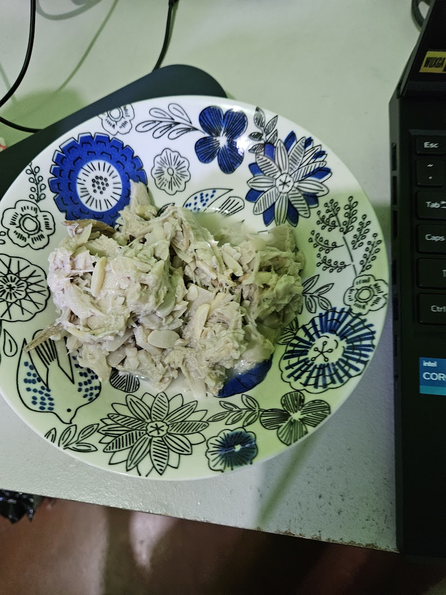

** start of index.html **
Langka and Fried Chicken Recipe
Langka Recipe
Langka, or jackfruit, is a nutrient-dense fruit that offers numerous health benefits, including improved digestion, enhanced immune function, and potential cancer-fighting properties.

Ingredients
- 1 ½ kilos fresh unripe langka (jackfruit), chopped
- 400 g pork belly chunks (optional, can substitute with shrimp or make vegetarian)
- 6 cloves garlic, minced
- 1 medium onion, sliced
- 1-inch ginger, sliced or julienned
- 4 medium tomatoes, chopped
- 2 cups coconut milk
- 2 cups coconut cream (for richer flavor)
- 2–3 pieces green chili (siling haba)
- Fish sauce or salt, to taste
- Black pepper, to taste
- Cooking oil
Instructions
- Prep the jackfruit: Peel and chop unripe langka into small pieces. If using canned/frozen jackfruit, rinse well to remove brine.
- Sauté aromatics: Heat oil in a pan. Sauté garlic, onion, ginger, and tomatoes until fragrant and softened.
- Cook the pork (if using): Add pork belly chunks. Season with fish sauce or salt. Cook until lightly browned.
- Add jackfruit: Stir in chopped langka. Mix well with aromatics and pork.
- Simmer in coconut milk: Pour in coconut milk. Cover and simmer until jackfruit softens (about 20–30 minutes).
- Finish with coconut cream & chili: Add coconut cream and green chili. Simmer for another 5–10 minutes until thick and creamy.
- Season & serve: Adjust taste with fish sauce, salt, and pepper. Serve hot with steamed rice.
Cooking Tips
- Vegetarian option: Skip pork/shrimp and add mushrooms or tofu.
- Spicy kick: Use siling labuyo (bird’s eye chili) for more heat.
- Texture balance: Coconut cream makes it richer; adjust based on preference.
- Substitute: If fresh langka isn’t available, canned or frozen unripe jackfruit works well.
** end of index.html **